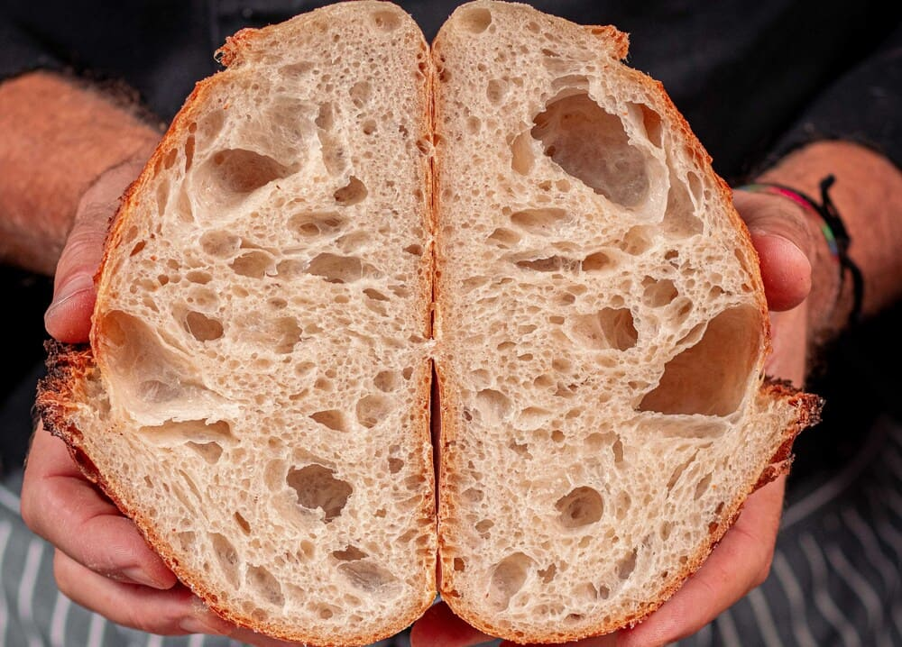

<!DOCTYPE html>
<!--
  cards.html — Página de galería de panes.
  Contiene solo el contenedor vacío; las tarjetas se generan por JavaScript
  (js/index.js) a partir de los datos definidos en js/cssClassMap.js.
-->
<html lang="en">
<head>
	<meta charset="UTF-8"></meta>
	<meta name="viewport" content="width=device-width, initial-scale=1.0"></meta>
	<link rel="stylesheet" href="css/cards.css"></link>
	<title>Document</title>
</head>
<body>

	<!-- Contenedor de la galería: aquí se insertan las tarjetas generadas. -->
	 <div id="section1" class="card-gallery">

	 </div>
      <!--
        Ejemplo estático de la estructura de una tarjeta, por si se necesita
        maquetar una a mano sin JavaScript.

	<div class="card-section card-closed">
	   <div class="card-image-container">
	       
	   </div>

	   <div class="non-visible card-content-container">
	       <h4>
		  Nombre del plato
	       </h4>
	       <div class=" card-content-paragraph-container">
		  <p>
		     El mejor plato del mundo señor, sushi con hamburguesa mezclado con pan de oro con caviar
		  </p>
	       </div>
	   </div>

	</div>
      -->
	<script src="js/index.js" type="module">
	</script>
</body>
</html>
